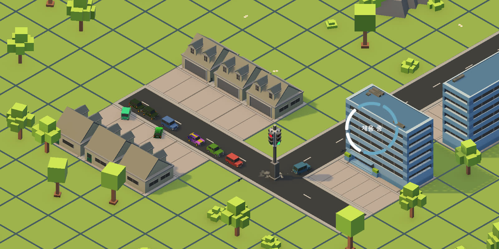

고전부터 현대 명작까지 장르를 가리지 않고 깊게 플레이해 온 개발자입니다. 플레이어로서 쌓은 시스템 이해를 코드로 옮기고, 구현한 규칙은 감이 아니라 수치로 검증하고 테스트로 고정합니다.
| 플레이 라이브러리 | 120개 타이틀 · PS · Steam · Switch · Xbox |
|---|---|
| 대표작 | IDLE CITY — 수백 대 차량 교통 시뮬 코어 설계·구현 / PARRYWAY — AI 네이티브 방식으로 제작·공모전 제출 |
| 검증 습관 | 자동 테스트로 코어 고정(IDLE CITY 671개 · PARRYWAY 160개) · 성능은 벤치마크로 실측 |
| 동작 환경 | Unity 6 (URP) · C# · TypeScript(웹) |
AI와 일하는 방식
AI가 코드를 짜는 시대에 개발자의 일은 무엇을 만들지 정하고, 결과가 맞는지 확인하는 것이라고 생각합니다. 그래서 저는 세 가지를 지킵니다.
1. 지식은 모델이 아니라 저에게 쌓입니다
개발 세션이 끝날 때마다 그날의 개발 로그와 교훈이 개인 위키(140여 페이지)로 회수됩니다. 원본 기록은 수정 없이 보존하고, 위키가 그것을 정리·연결하며, 깨진 링크나 누락은 검사 스크립트가 잡습니다. 실패는 증상 → 원인 → 다음에 할 것 형태의 카탈로그(Failure Patterns, 약 80항목)로 만들어 같은 실패가 재발하면 표시가 붙고, 새 작업은 이 재발 항목을 읽는 것으로 시작합니다. 이 위키는 특정 AI 전용이 아니라서 Claude로 작업하든 Codex로 작업하든 같은 기록을 읽고 이어서 시작합니다. 프롬프트 요령은 모델과 함께 사라지지만, 절차와 기록은 남습니다.
2. 맡기기 전에 계획을 씁니다
결정과 그 이유를 설계 문서에 남기고, 계획은 작업 1개 = 커밋 1개 단위로 쪼개며, 멈춰야 할 조건을 착수 전에 정합니다. AI에게 맡길지 직접 할지의 기준은 하나 — 자동 테스트로 검증할 수 있는가. 테스트 가능한 시뮬레이션·자료구조는 AI에게 맡기고, 재미·손맛·연출처럼 만져봐야 아는 것은 직접 합니다. 받은 결과는 자동 테스트를 통과해야만 반영합니다.
3. AI가 만든 것을 그대로 믿지 않습니다
통과한 테스트도 일부러 코드를 망가뜨려 정말 실패하는지 확인합니다. 서로 다른 관점의 AI 감사 셋을 붙였을 때는 독립적으로 같은 결론에 도달한 문제부터 고쳤고, 지적 하나는 검산 끝에 잘못된 지적임을 확인하고 기각했습니다 — 비평도 검증 대상입니다. 반대로 AI가 제 계획에 반박하면 일단 옳다고 놓고 검증합니다. 실제로 두 번 모두 AI가 옳았습니다.
이 방식으로 PARRYWAY를 기획부터 공모전 제출까지 빠르게, 그리고 검증과 함께 완성했습니다 — 자동 테스트 160개가 같이 남았습니다.
IDLE CITY — 교통 시뮬레이션 코어
방치형 도시건설 시뮬레이션 · 2026.07–08 · 5인 팀 · 기획 선정작 · 솔로 인수 후 출시 준비 중 (Second Layer Games)

제안한 기획이 선정되어 시작된 프로젝트입니다. 최초 기획자로서 인게임 콘텐츠를 설계했고, 구현에서는 교통 시뮬레이션 코어를 담당했습니다. 팀 커밋의 56%(424/752)가 제 것이며, 코어에는 EditMode 회귀 테스트 671개를 두어 특성을 고정했습니다. 화면 계층까지 합치면 테스트는 1,204개입니다.
기획 담당
- 도시의 하루. 출퇴근만 있던 도로에 점심·저녁 외출과 특수건물 방문을 추가해 24시간 교통 수요를 분산 배치했습니다
- 회사 3종과 출퇴근 시간표. 사무실·물류창고·공장의 정원과 출퇴근 시각을 분리하고, 시간대를 의도적으로 겹쳐 러시아워를 데이터로 만들었습니다
- 교통 도구의 구매 대상 정의. 신호등은 무신호 교차로의 통과량 상한을 해제하고, 버스 정류장은 통근 차량 자체를 줄입니다
코어 구현
- 길찾기 — 부하 적립 라우팅(RoutePlanner). 수백 대의 차량을 서로 다른 경로로 배분하는 통행 배정 알고리즘. 앞차가 채운 부하를 뒷차가 비용으로 읽는 순차 배정 다익스트라, 20×20 리전 분할
- 차량 주행. 개별 속도 시뮬레이션, 교차로 점유·연속 대기열, 정지 복구 워치독(재라우팅 3회·재시작 6회)
- 시뮬레이션과 화면의 권한 분리. 위치·점유 판정을 시뮬레이션 계층으로 단일화, 화면은 보간만(PR 5건). 차선 오프셋 검증 80/80 정확 · 차간 위반 0
- 경제 어뷰징 차단. 정체를 일부러 만드는 편법이 순이익이던 구조(실측 35 대 24코인)를 무이자 정산과 장부 소각으로 뒤집고 단언 테스트 3종으로 고정
사례 — 길찾기 재설계: 틀린 건 알고리즘이 아니라 질문이었다
문제. 우회로를 건설해도 통행량이 옮겨가지 않았습니다. 최단 경로 탐색을 수백 번 반복하면 수백 대가 전부 같은 경로를 돌려받기 때문입니다.
분석. 이것은 길찾기가 아니라 통행 배정(traffic assignment) 문제입니다. 부하는 배정하면서 생기는 중이므로 혼잡 휴리스틱은 순환 의존이 됩니다.
해결. 수요를 한 대씩 순차 배정하며 확정 경로의 타일에 부하를 쌓고, 다음 차량이 그 부하를 비용으로 읽게 했습니다. step = 1 + w × (부하 / 수용량)
결과. 우회를 지시하는 분기문 없이 통행량이 분산됩니다. w=0이면 실패하는 회귀 테스트로 고정했고, 구현 후 대조하니 교통공학의 점증 통행배정과 같은 구조였습니다.
성능 — 측정한 것과 아직 못 넘은 벽
통행 배정 1회의 비용을 EditMode 벤치마크로 실측했습니다. 이 함수는 매 프레임이 아니라 도로를 지을 때만 호출되므로, 기준은 프레임 타임이 아니라 건설 클릭의 체감입니다.
| 플레이 구역 | 도로 타일 | 차량 | 재계획 |
|---|---|---|---|
| 20×20 (초기 해금) | 175 | 18대 | 2.7 ms |
| 20×20 (만차) | 175 | 82대 | 12.1 ms |
| 40×40 | 700 | 96대 | 388 ms |
| 80×80 | 2,800 | 96대 | 1,879 ms |
Apple M4 Pro · Unity 6000.5.2f1 · EditMode · 11회 중앙값(워밍업 3회) · 벤치마크 코드 · PR #257
차량 수에는 선형입니다 — 18대와 82대의 1대당 비용이 0.151ms와 0.147ms로 거의 같습니다. 도로망 크기에는 무너집니다 — 도로가 4배 늘 때 1대당 비용이 27배가 됐습니다. 다음 수는 우선순위 큐와 변경 구역만 다시 푸는 증분 재계획이며, 벤치마크가 테스트로 남아 있어 개선 여부는 다시 측정해서 확인합니다.
사례 — 플레이테스트 기반 단일 지표
문제. "조작의 효과가 느껴지지 않는다"는 피드백. 교통 도구는 여러 개인데 설치 결과가 화면에 보이지 않았습니다.
해결. 모든 교통 도구가 공통으로 끌어올리는 단일 지표 — 정지 없이 연속 통과한 교차로 수를 정의했습니다. 판정은 시뮬레이션 계층에서만 합니다. 화면이 같이 판정하면 진실이 두 개가 되고, 그것이 실제로 겪은 버그의 원인이었기 때문입니다.
PARRYWAY — AI 네이티브 방식으로 빠르게 제작
4방향 하드코어 패링 러너 · HTML5 · 2026.08.14–26 · OpenAI Game Builders Seoul 제출 (Second Layer Games)
공격도 이동도 없이, 사방에서 오는 공격의 마지막 진입 방향을 읽고 방패로 튕겨내며 집으로 향하는 게임입니다. 반응이 아니라 판단을 시험합니다.
| 제작 방식 | AI 네이티브 — 계획·체감 판정·수용은 사람, 구현·검증 루프는 AI 분업 |
|---|---|
| 규모 | TypeScript 15파일 · 약 10,100줄 · 런타임 의존성 0 |
| 검증 | 회귀 테스트 160개 — 판정 1ms 경계 · 리듬 · 1000m 자동 완주 스모크 포함 |
| AI 분업 | Claude(초기 골격) · Codex(고도화·검증 루프) · 서브에이전트 3관점 독립 감사 · 사람 = 규칙·체감 판정·수용 결정 |
사례 — 속도감의 원인은 배율이 아니라 무늬였다
문제. "속도감이 없다"는 체감 피드백. 스크롤 배율을 올리자 멀미만 늘었습니다.
해결. 바닥이 가로 줄무늬라 가로로 흘려도 시각계가 이동을 검출하지 못하는 것이 원인이었습니다. 배율 대신 4m 간격의 수직 엣지(벽 배너)를 도입해 같은 속도에서 속도감을 만들었습니다.
사례 — 통과하는 테스트는 증거가 아니다
문제. 튜토리얼 탈출 테스트가 검증 대상 상수를 테스트 안에서 그대로 써서, 상수를 9999로 바꿔도 통과했습니다.
해결. 요구를 고정 상한으로 다시 표현하고, 이후 중요한 테스트는 전부 일부러 코드를 망가뜨려 실패하는지 확인한 뒤에만 통과시켰습니다.
MOLTEN ARENA — 1개월 완주
3인칭 웨이브 생존 로그라이트 · 2026.05–06 (1개월) · 2인 팀
- 확장 구조 설계. 무기·아이템 데이터를 ScriptableObject로 분리해, 신규 무기 추가 시 기존 코드 수정 0줄로 확장되는 구조(OCP)
- 이벤트 주도 구조. 이벤트 구독으로 인벤토리·레벨업·핫바 UI와 시스템 로직 분리
- 타격감. 히트스톱·플래시·스케일 펀치 + VFX 오브젝트 풀링·동시 상한
사례 — 병합 충돌 회피 설계
문제. 일시정지 상태에서 카메라가 계속 돌았습니다. 회전 로직이 동료 코드 안에 있어 직접 고치면 병합 충돌 위험이 있었습니다.
해결. 원본을 건드리지 않고 timeScale=0일 때 회전 입력만 차단하는 독립 컴포넌트를 붙였습니다. 동료 코드 수정 0줄. 3개 경로에서 검증했습니다.
플레이 기록 — 고전에서 현대 명작까지
창세기전과 악튜러스, 파이널판타지와 드래곤퀘스트 같은 고전 명작부터 발더스 게이트 3와 메타포까지 — 장르의 기준이 된 게임들을 골라 플레이해 왔습니다. 단순히 많이 하는 것이 아니라, 이 재미가 어떤 시스템에서 나오는지 뜯어보며 플레이합니다. 그 이해가 도시 시뮬레이션과 통행 배정 설계로 이어집니다.
아래는 실제 플레이 기록이 남아 있는 라이브러리 전체입니다 — 120개 타이틀 (PS4·PS5·Steam·Switch·Xbox, 2026-08 기준).
PSN·Steam API 1회 덤프 정적 데이터. Xbox·Switch는 조회 API가 없어 본체 기록을 보고 직접 등재했습니다.
기술 사양
- ENGINE
- Unity 6 (URP, 3D) · 웹(Canvas 2D)
- LANGUAGE
- C#, TypeScript, Python
- CLIENT
- 게임플레이, UI·HUD, 인벤토리, 타격감, 경로 탐색과 통행 배분, 에디터 툴
- DESIGN
- ScriptableObject 데이터 주도, 이벤트 구독, SOLID(SRP/OCP/DIP), 자체 알고리즘 설계
- VERIFY
- TDD — EditMode·NUnit, 회귀 테스트로 특성 고정, 뮤테이션 확인
- COLLAB
- Git(브랜치·PR 리뷰·머지), Plastic SCM, 개발 로그 문서화, AI 오케스트레이션(Claude Code·Codex·Unity MCP)
- EDU
- 한국방송통신대학교 컴퓨터공학과 2027.03 졸업 예정 · 오즈코딩스쿨 게임 개발 부트캠프 (2026.03–08)
그 외 — 게임 분석 블로그
화제작·신작을 개발자 관점에서 역기획하는 글을 69편 발행했습니다. 소재 선정(검색 수요 데이터) → 개요 → 초안 → 품질 검수 → 발행의 반자동 파이프라인을 직접 만들었고, 어느 단계를 자동화하고 어느 단계에 사람의 판단을 남길지 설계한 것이 결과물입니다.
연락처
서류 단계에서 궁금한 점은 어느 채널이든 하루 안에 답변드립니다.